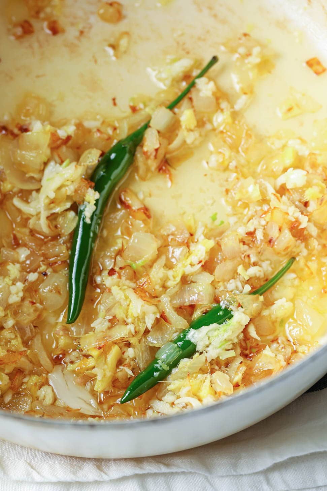
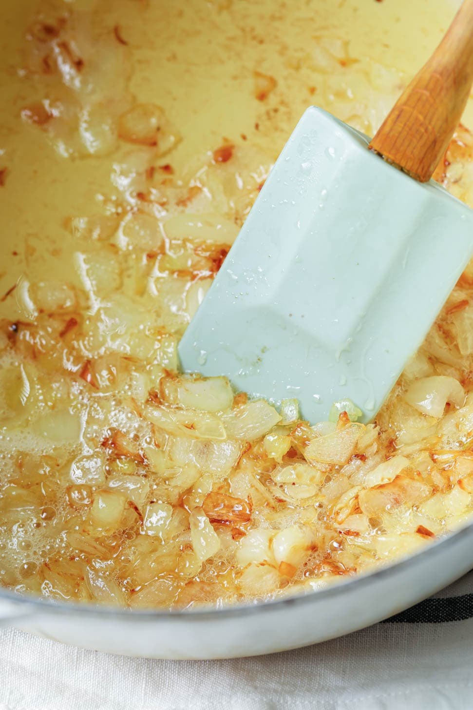
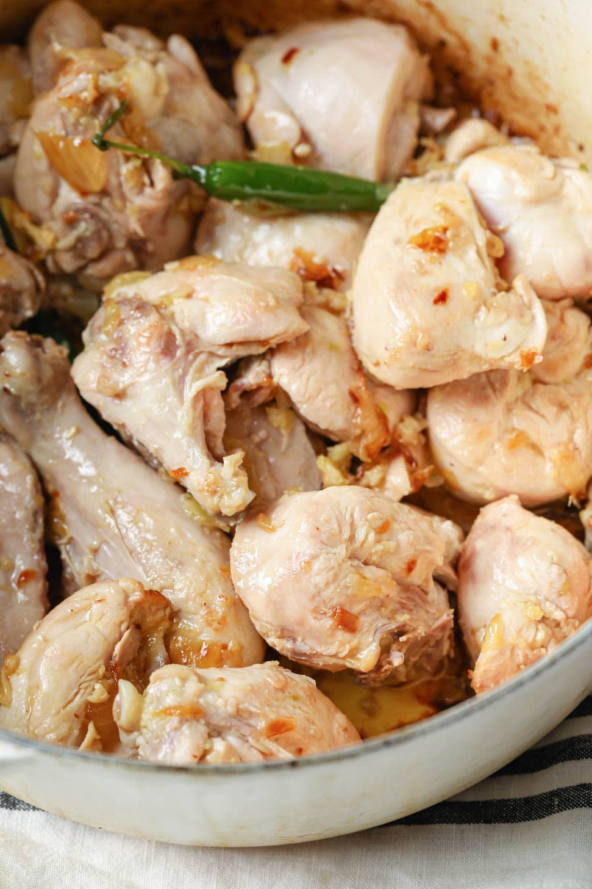
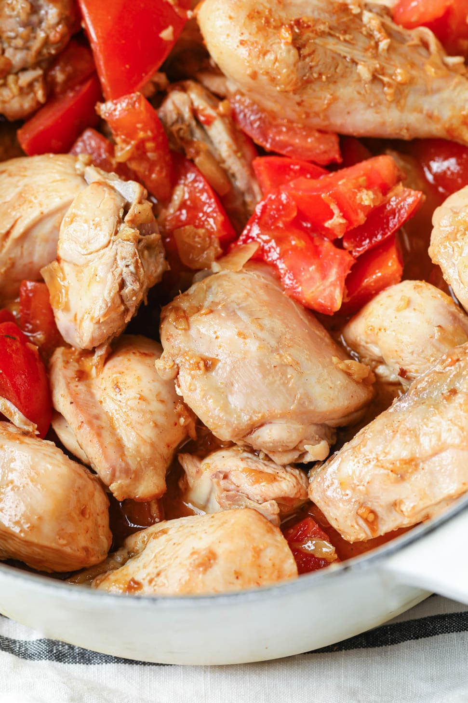

Sheetpansteak
chaplikabab
chikenkarai
ToSecondLast
Last
Welcome To Receipes We Have
Sheet Pan Steak

- Prep Time:10 mins
- Cook Time:1 hr 6 min
- Marinate Time:30 mins
- Total Time:1 hr 46 mins
- Servings:4
Ingredients
- 1 pound tenderized round steak
- 1 (1.06 ounce) package Brazilian steakhouse marinade mix, such as McCormick® Grill Mates® Brazilian Steakhouse Marinade
- 1/4 cup oil
1/4 cup water
- 1 tablespoon red wine vinegar
3 cups baby potatoes, halved
- 1 pound French green beans, trimmed
1 (1.25 ounce) package toasted onion & garlic potato seasoning, such as McCormick® Toasted Onion & Garlic Potato Seasoning
2 tablespoons oil
Directions
Step 1
Steak in a resealable plastic bag. Whisk together marinade mix, 1/4 cup oil, water, and red wine vinegar in a small bowl; pour into the bag. Reseal the bag, pressing out excess air, and squeeze bag to coat steak. Marinate steak in the refrigerator for a minimum of 30 minutes or up to overnight.
Step 2
Preheat the oven to 325 degrees F (165 degrees C). Line a baking sheet with foil.
Step 3
Place baby potatoes, green beans, and 2 tablespoons oil in a large resealable plastic bag; toss well to coat. Sprinkle in potato seasoning, reseal the bag, and toss again.
Step 4
Spread vegetables in a single layer on the prepared sheet; add steak on top of vegetables.
Bake in the preheated oven until potatoes are tender and steaks are firm and reddish-pink and juicy in the center, about 1 hour. Turn on the broiler, and broil steak for 3 minutes. Turn steak over and broil 3 minutes more. An instant-read thermometer inserted into the center should read at least 130 degrees F (54 degrees C). Serve immediately.
ToTop
To Second Last
ChapliKabab

Chapli kebab is a minced meat patty widely popular in Pakistan.
Mixed with a blend of spices, ground beef is flattened into patties and shallow-fried until the exterior is charred and flavorful. Serve in a bun with pickled red onions or with a side of pita bread. My raita (yogurt dip) recipe makes a great addition
- Prep Time:30 mins
- Cook Time:10 min
- Total Time:40 mins
- Servings:4
Ingredients
- cooking spray
- large egg, lightly beaten
1 pound ground beef
1 red onion, finely chopped
1 tomato, finely chopped
- cup finely chopped cilantro
¼ cup finely chopped mint
- teaspoons ginger-garlic paste
2 teaspoons coriander seeds, crushed
- teaspoon salt
¾ teaspoon ground cumin
- teaspoon ground cayenne pepper
2 tomato, sliced into rounds
- cup vegetable oil for frying, or more as needed
ToTop
Last
Chikenkarai
Chicken Karahi is a tomato and ginger based, thick masala curry which is though to originate from the Khyber Pakhtunkhwa region. The original, authentic method of making it is a very specific one. As a general rule, Karahis are made from a base of ginger, garlic and tomatoes and also contain fresh green chillis, julienne-cut raw ginger and coriander. It’s a rather thick, jammy gravy and concentrated in flavour – yum!
Ingredients
- Meat
- Fresh Garlic
- Fresh Ginger
Fresh Tomatoes
- Spices
Green Chilli+ Coriander
HOW TO MAKE KARAHI
- Heat the oil and brown the chopped onions. Sauté the onions until they’re lightly golden. Then add garlic, ginger, and green chili pepper. The onions will deepen in color as the aromatics cook.


- Sauté the chicken. This technique, called ‘bhunai‘ sears the meat and gives it richer flavor and color. A sprinkle of salt here helps layer the flavor.

- Add the tomatoes, spices, and salt. The moisture from all the tomatoes will be enough to cook the chicken while keeping it moist.

- Cover & cook. Allowing the chicken to slowly simmer while covered results in tender chicken and well-developed flavors. This also helps the tomatoes break down well.
- Uncover and stir-fry on high heat to sauté out the water content. You’re done once the chicken taking on a glossy appearance as the ghee/oil starts to separate
- Finish off with freshly ground black peppercorns and garam masala and stir to mix. Garnish with green chili peppers, julienned ginger, and cilantro.

ToTop